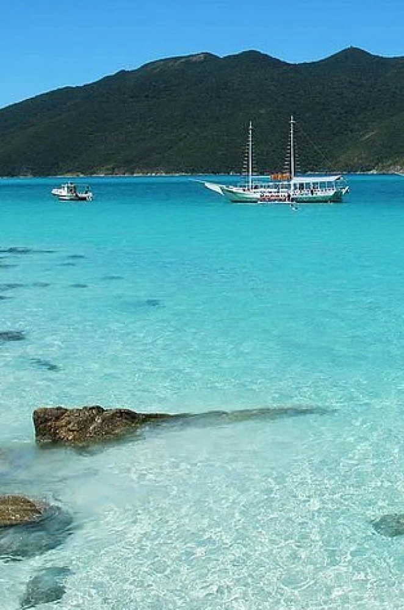
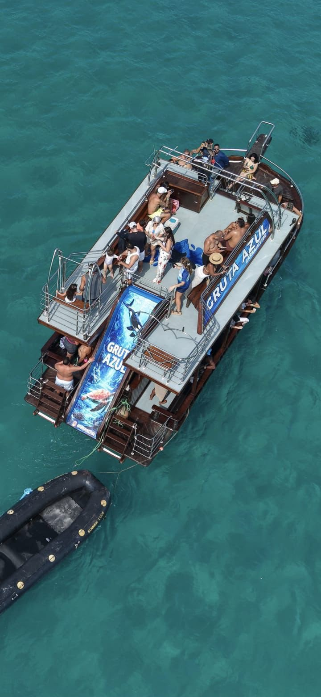
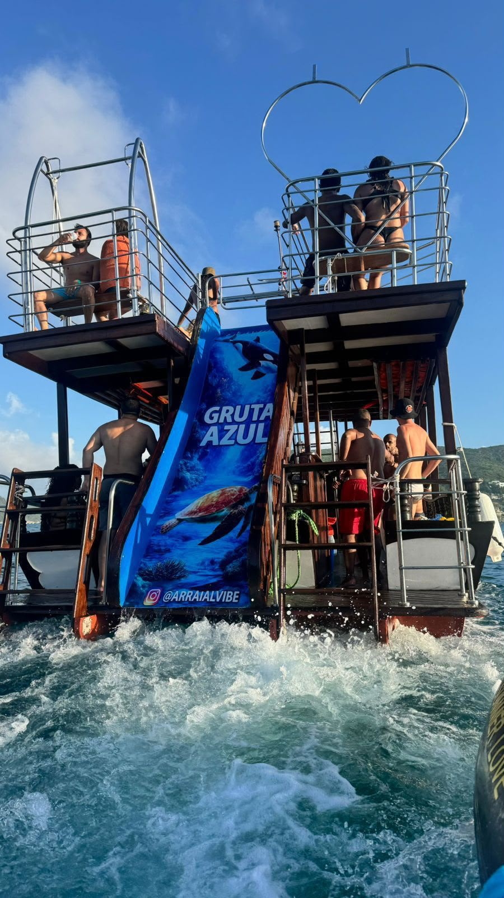
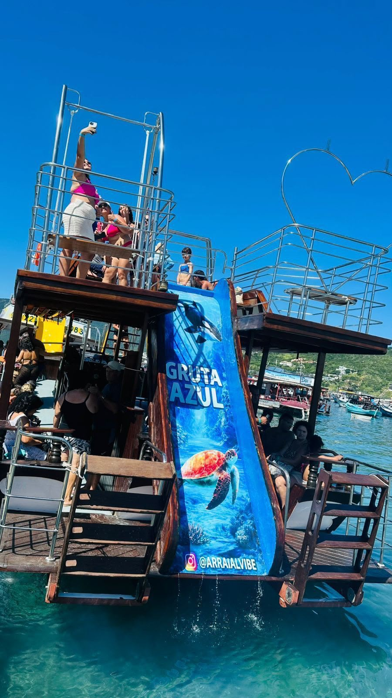
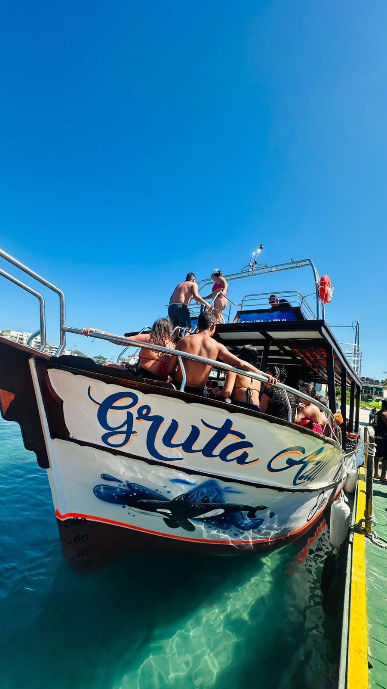
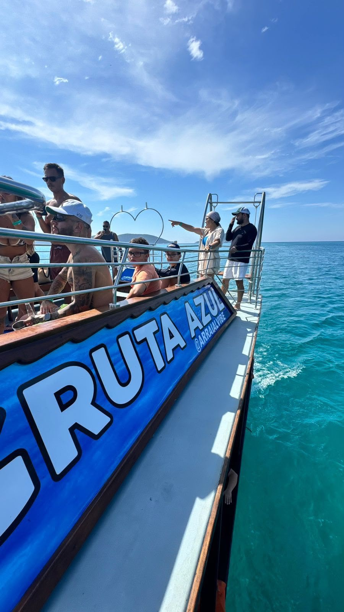
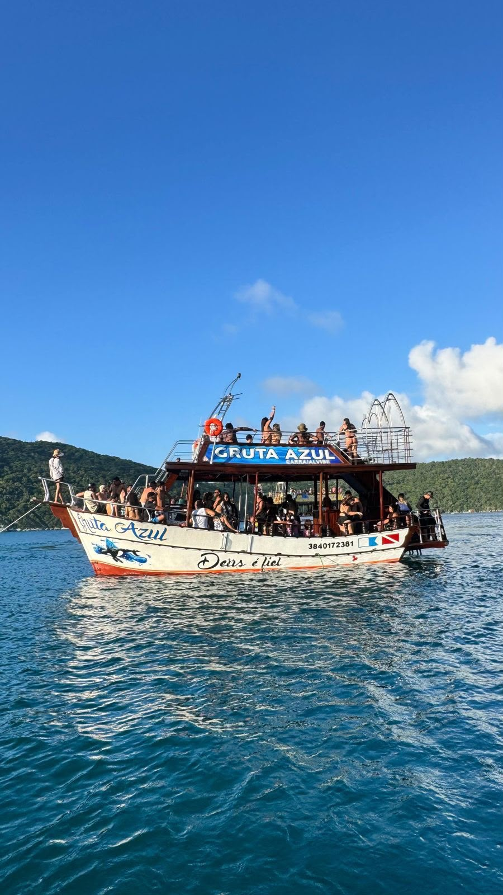
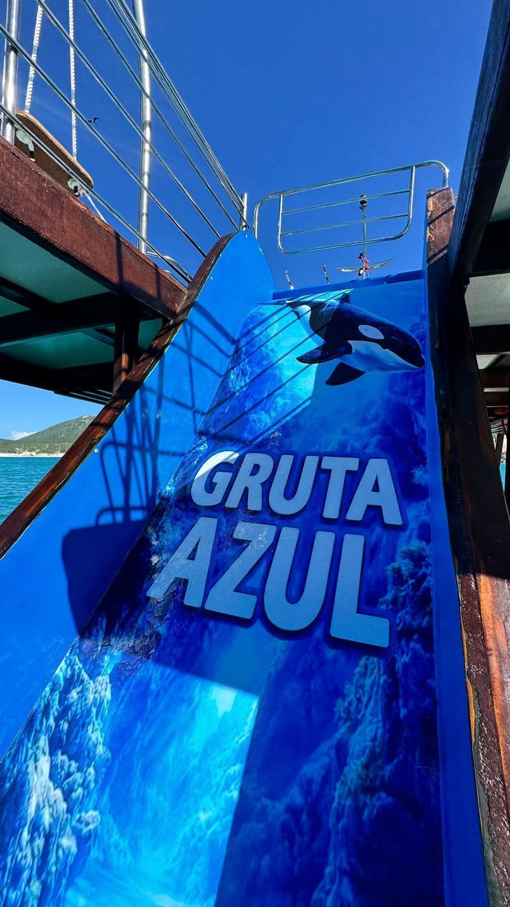
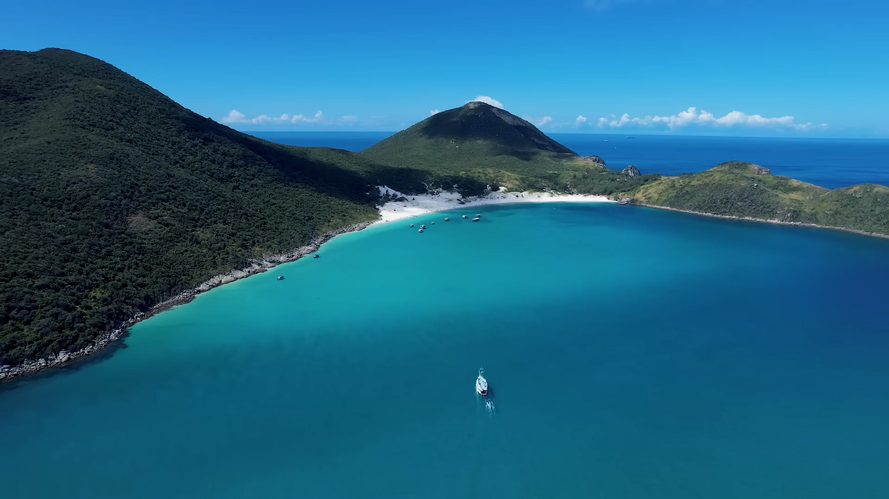
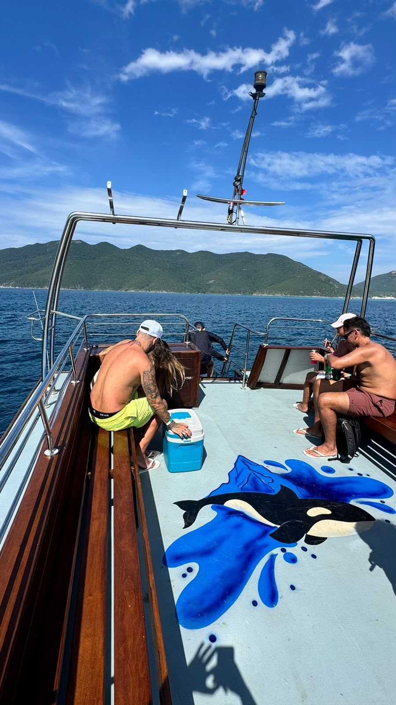

◆ Parada para aproveitar
PARADA 01
Ilha do Farol
Eleita entre as praias mais bonitas do Brasil. Tempo para banho de mar, contemplar o visual e registrar fotos.
Cerca de 1 hora no localUm roteiro de 4 horas com paradas em praias paradisíacas, pontos panorâmicos icônicos, estrutura a bordo e cortesias para deixar o passeio ainda mais completo.
Tudo em uma única saída de 4 horas, com estrutura a bordo e a equipe da Arraial Vibe cuidando dos detalhes.
Três paradas para aproveitar e quatro pontos panorâmicos. Role para percorrer o trajeto, do embarque na Praia dos Anjos ao retorno.
Roteiro e paradas podem variar conforme as condições do mar e fatores operacionais. Confirme os detalhes da sua data pelo WhatsApp.
Quero esse roteiro para minha dataA Gruta Azul, embarcação da Arraial Vibe, tem dois decks, área de sol e estrutura pensada para o conforto e a segurança de toda a família durante as 4 horas de passeio.
Itens como Wi-Fi, guia de turismo, fotógrafo, barzinho a bordo e cooler são confirmados pelo WhatsApp de acordo com a data — assim você embarca sabendo exatamente o que esperar.

A Gruta Azul vista do altoEstrutura para toda a família durante as 4 horas de passeio.
Aquele clima leve de quem escolheu curtir Arraial pelo mar.
Itens de segurança disponíveis para todos os passageiros.
Para relaxar na água durante as paradas para banho de mar.

Durante o passeio, a Arraial Vibe oferece bebidas de cortesia para os passageiros aproveitarem o trajeto com mais tranquilidade.
Para se manter hidratado durante as 4 horas de sol e mar.
Aquela bebida gelada para acompanhar as paradas para banho.
A tradicional caipirinha para brindar a experiência em alto-mar.
As cortesias podem seguir regras de disponibilidade e consumo. Confirme os detalhes pelo WhatsApp antes de reservar.

O passeio combina paisagens de água cristalina, momentos para fotos, banho de mar, música ambiente e aquele clima leve de quem escolheu aproveitar Arraial do Cabo pelo melhor ângulo: o mar.
Sem banco de imagens: essas são fotos da nossa própria embarcação, do mar de Arraial e de quem já embarcou com a gente.
A Gruta Azul navegando por Arraial
Escorregador e deck superior
Embarque na Praia dos Anjos
A bordo, com o mar aberto
A embarcação por inteiro
Detalhes da Gruta Azul
O paraíso visto de cima
Momentos a bordoAqui a gente mostra o roteiro, a estrutura, os pontos visitados e as cortesias — e deixa um canal direto para tirar dúvidas antes de fechar sua data.
Ilha do Farol, Prainhas, Praia do Forno e pontos panorâmicos em uma única saída.
Embarcação com dois decks, banheiro, som ambiente e itens de segurança.
Água, refrigerante e caipirinha para deixar o passeio mais leve.
Nada de agência genérica: você fala direto com quem opera o passeio.
Você vê exatamente a embarcação e o mar antes de reservar.
Flexibilidade para encaixar o passeio na sua viagem a Arraial.
Toque no botão e inicie a conversa com a nossa equipe.
Diga a data desejada e quantas pessoas vão embarcar.
Valores, horário de saída e disponibilidade para o seu dia.
Ponto de encontro, horário de chegada e o que levar.
Chegue no horário combinado e viva Arraial pelo mar.
Sem juridiquês: o essencial para você reservar com tranquilidade. Como algumas condições variam por data e clima, o que ainda depende de confirmação está sinalizado — é só alinhar pelo WhatsApp.
As saídas, o roteiro e as paradas podem depender das condições do mar e do clima no dia. Em caso de tempo instável, a equipe orienta sobre remarcação ou alternativas.
Confirme a política da sua data pelo WhatsApp.
As regras de cancelamento e remarcação são combinadas no momento da reserva.
Confirme prazos e condições pelo WhatsApp.
Recomendamos chegar com antecedência ao ponto de embarque. O horário exato de saída e a tolerância de chegada são informados na confirmação da reserva.
Confirme o horário do seu passeio pelo WhatsApp.
Podem existir taxas municipais ou de acesso não inclusas no valor do passeio.
Confirme se há taxa de embarque para a sua data.
Recomendamos protetor solar, roupa de banho, toalha, uma muda de roupa seca, boné e documento com foto. Câmera ou celular para registrar os melhores momentos também são bem-vindos.
O passeio tem apelo para toda a família. Regras específicas para crianças, valores e documentos necessários no embarque são alinhados na reserva.
Confirme regras e valores para crianças pelo WhatsApp.
Além das cortesias de água, refrigerante e caipirinha, as regras sobre levar cooler, isopor ou bebidas próprias variam.
Confirme a regra de cooler antes de embarcar.
As formas de pagamento aceitas (Pix, cartão, dinheiro) e eventuais condições são informadas no atendimento.
Confirme as formas de pagamento pelo WhatsApp.
O passeio informado pela Arraial Vibe tem duração de aproximadamente 4 horas, com paradas para banho e pontos panorâmicos ao longo do trajeto.
O roteiro inclui paradas na Ilha do Farol, nas Prainhas do Pontal do Atalaia e na Praia do Forno, além de pontos panorâmicos como Fenda de Nossa Senhora, Pedra do Macaco, Gruta Azul e Pedra do Meteorito. As paradas podem variar conforme as condições do mar.
Sim, há saídas todos os dias. A disponibilidade para a sua data específica é confirmada pelo WhatsApp.
A embarcação possui banheiro, som ambiente, coletes salva-vidas e macarrão flutuante. Também há cortesia de água, refrigerante e caipirinha. Itens adicionais são confirmados no atendimento.
Sim. A embarcação conta com banheiro a bordo e coletes salva-vidas disponíveis para os passageiros.
As regras e valores para crianças, assim como a existência de taxa de embarque, dependem da data e da operação.
Confirme valores e taxas pelo WhatsApp.
As condições de saída podem depender do clima e do mar. Em caso de tempo instável, a equipe orienta sobre as alternativas para a sua data.
Confirme a política de chuva pelo WhatsApp.
O endereço informado é Praça Daniel Barreto, 2 — Praia dos Anjos, Arraial do Cabo/RJ, com embarque no cais da Praia dos Anjos. Confirme pelo WhatsApp o ponto exato de encontro e o horário do seu passeio.
É só chamar no WhatsApp, informar a data e a quantidade de pessoas. A equipe confirma valores, horário e disponibilidade e envia as orientações para o embarque.
Fale agora com a Arraial Vibe, consulte a disponibilidade para a sua data e receba as orientações para reservar o seu passeio.
Consultar disponibilidade no WhatsAppAtendimento direto com o Diego · +55 22 99912-2511